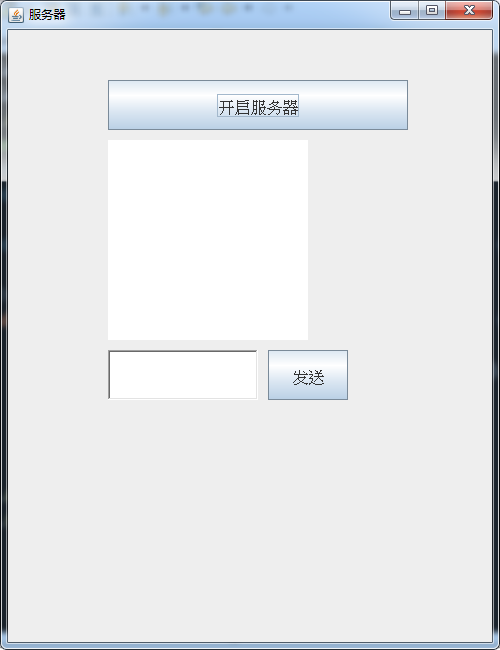
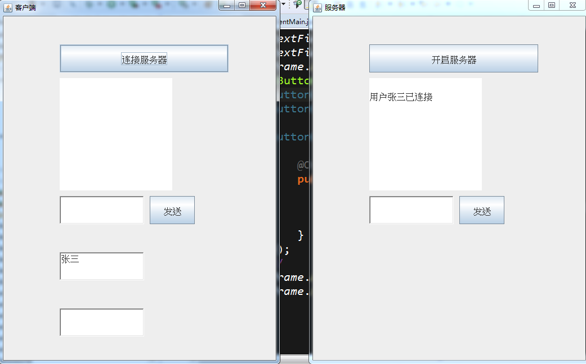
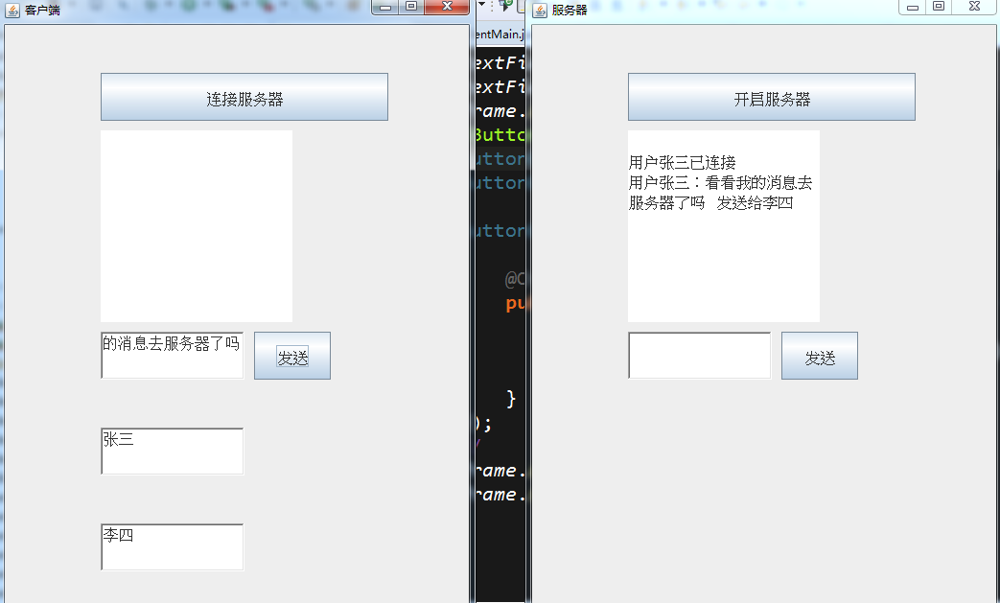
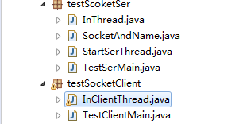

socket实现局域网聊天室
大家好，我是mythSun。
很高兴能在这里和大家分享，socket实现局域网聊天室。
话不多说，直接开始。
对于socket，相信同学们不陌生了，那么今天，实现一个局域网内相互通信的实战。
先给大家看演示。最后贴核心代码，需要整个代码的同学，可以联系我。
先讲一下原理
对于Java Socket编程而言，有两个概念，
一个是ServerSocket，一个是Socket。
服务端和客户端之间通过Socket建立连接，之后它们就可以进行通信了。
首先ServerSocket将在服务端监听某个端口，当发现客户端有Socket来试图连接它时，
它会accept该Socket的连接请求，同时在服务端建立一个对应的Socket与之进行通信。
这样就有两个Socket了，客户端和服务端各一个。
对于Socket之间的通信其实很简单，服务端往Socket的输出流里面写东西，
客户端就可以通过Socket的输入流读取对应的内容。
Socket与Socket之间是双向连通的，所以客户端也可以往对应的Socket输出流里面写东西，
然后服务端对应的Socket的输入流就可以读出对应的内容。
首先开启服务器，不开启服务器，想聊天都没地。

然后输入用户名“张三”连接服务器。
可以看到用户登录的信息已经被服务器收到了，当然可以做个数据库，验证登录，这就更像一个聊天室了。

发条消息，看服务器有没有收到，发送给“李四”，可以看到服务器已经收到了。
因为没开李四的客户端，不然李四那边，也是会收到这个的。

这是项目的分包，上面是服务器的包，下面是客户端的包。

核心代码：
首先服务器要有个方法，一直执行接收消息。
然后服务器还要有个分发的方法，让消息去往相应的客户端
绘制一个服务器的前端
绘制一个客户端的前端
客户端的代码